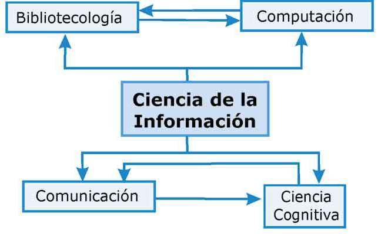
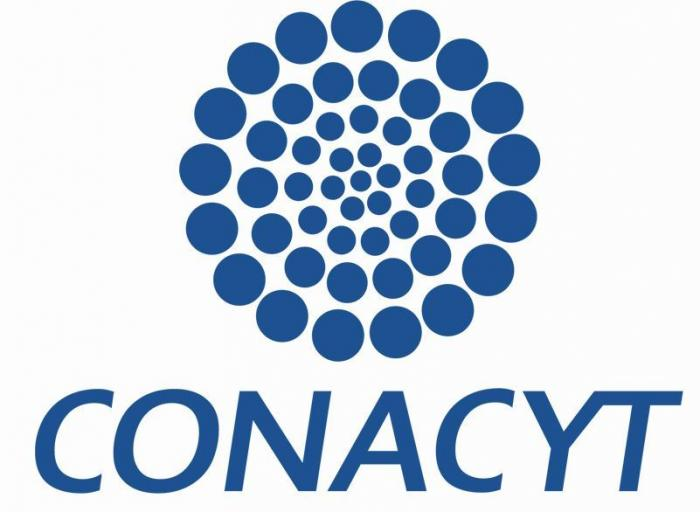

HACIA DONDE VA LA INVESTIGACION EN LAS CIENCIAS DE LA INFORMACION
Sobre el conferencista...
Nombre: Dra. Xiomara Penélope Zaldívar Colado
Egresada: Universidad Autónoma de Sinaloa
Trabajo: Coordinadora del Posgrado en Ciencias de la Información
Áreas de interés: Educación, Robótica educativa y ambientes virtuales.
Correo: xiomara.zaldivar@uas.edu.mx

Ciencias de la información.
Ciencias de la información
¿Qué es?
Es una rama de la ciencia que estudia la práctica del procesamiento
de información y la ingeniería de los sistemas de información. Tiene
un fuerte vínculo con las ciencias de la computación.
¿Qué es?
El campo estudia la estructura, algoritmos, comportamiento e interacciones
de los sistemas naturales y artificiales que guardan, procesan, acceden a y
comunican información. También desarrolla sus propios fundamentos conceptuales
y teóricos y emplea fundamentos desarrollados en otros campos.
Programa Nacional de Posgrados de Calidad
¿Qué es?
El Programa Nacional de Posgrados de Calidad (PNPC) forma parte de la
política pública de fomento a la calidad del posgrado nacional que el
Consejo Nacional de Ciencia y Tecnología y la Subsecretaría de Educación
Superior de la Secretaría de Educación Pública han impulsado de manera
ininterrumpidamente desde 1991.

Logo CONACyT.
| Posgrados de calidad | |
|---|---|
| 158 | Físico Matemático |
| 170 | Biología y Química |
| 371 | Medicina |
| 347 | Humanidades |
| 419 | Ciencias Sociales |
| 221 | Biotecnología y Ciencias Agropecuarias |
| 466 | Ingenierías |

Programa Nacional de Posgrados de Calidad.
Niveles de PNPC
Los programas que resultan aprobados en el proceso de la evaluación académica se integran en el Padrón del Programa Nacional de Posgrados de Calidad yestá conformado por cuatro niveles.
-
Competencia internacional. Programas que tienen colaboraciones en el ámbito internacional a través de convenios que incluyen la movilidad de estudiantes y profesores, la codirección de tesis y proyectos de investigación conjuntos.
-
Consolidados. Programas que tienen reconocimiento nacional por la pertinencia e impacto en la formación de recursos humanos de alto nivel, en la productividad académica y en la colaboración con otros sectores de la sociedad.
-
En desarrollo. Programas con una prospección académica positiva sustentada en su plan de mejora y en las metas factibles de alcanzar en el mediano plazo.
-
De reciente creación. Programas que satisfacen los criterios y estándares básicos del marco de referencia del PNPC.
¿Que hacen los egresados del PNPC?
- Estudios de doctorado nacionales e internacionales.
- Se incorporan en la academia de posgrados de calidad.
- Desarrollándose en la ID.
- Investigación en proyectos con financiamiento CONACYT

Pruebas al software.
Fotos de la conferencia

Recibiendo Obsequio.